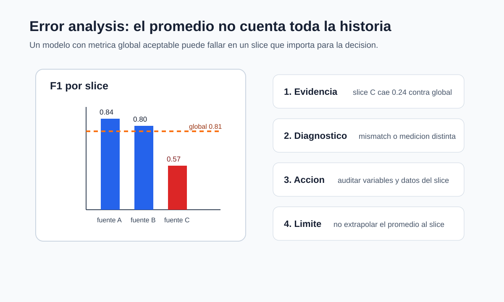

Error analysis y data mismatch
Pregunta aplicada
Dos modelos pueden tener la misma métrica agregada y fallar en casos completamente distintos.
El análisis de errores pregunta:
¿dónde falla el modelo, para quién falla y qué experimento debe seguir?
Objetivos del capítulo
Al terminar este capítulo deberías poder:
- separar errores por tipo: falsos positivos, falsos negativos y casos ambiguos;
- definir slices relevantes para un proyecto;
- detectar señales de data mismatch;
- escribir una recomendación con resultado, diagnóstico y acción;
- reconocer cuándo una métrica agregada oculta daño o riesgo.
- cuantificar la variación de una métrica por slice usando su denominador efectivo;
- separar slices predefinidos de hallazgos exploratorios seleccionados después de mirar los errores.
Riesgo condicional por slice
Para un slice \(S\subseteq\mathcal X\times\mathcal Y\) con \(\mathbb P_P(S)>0\), definimos
\[ R_P(f\mid S) =\mathbb E_P[\ell(f(X),Y)\mid (X,Y)\in S]. \]
El promedio global satisface una descomposición por una partición \(S_1,\ldots,S_J\):
\[ R_P(f)=\sum_{j=1}^J\mathbb P_P(S_j)R_P(f\mid S_j). \]
Un slice pequeño puede tener riesgo alto y aportar poco al promedio global. Por eso el análisis debe reportar simultáneamente tamaño, prevalencia, conteos de error y métrica condicional.
Cambio de distribución como cambio de medida
Train y uso corresponden a distribuciones \(P_{\mathrm{train}}\) y \(P_{\mathrm{uso}}\) sobre el mismo espacio de observaciones. Si \(P_{\mathrm{uso}}\) es absolutamente continua respecto de \(P_{\mathrm{train}}\), el riesgo de uso puede escribirse formalmente como
\[ R_{\mathrm{uso}}(f) =\mathbb E_{P_{\mathrm{train}}} \left[w(X,Y)\ell(f(X),Y)\right], \qquad w=\frac{dP_{\mathrm{uso}}}{dP_{\mathrm{train}}}. \]
Esta identidad no resuelve el problema: las razones pueden ser desconocidas o muy inestables, y puede haber regiones de uso sin soporte en entrenamiento. Sirve para precisar por qué comparar histogramas no basta para garantizar transportabilidad.
La expresión general reúne situaciones distintas, pero distinguirlas orienta el diagnóstico:
- En un cambio de covariables, cambia \(P(X)\) mientras \(P(Y\mid X)\) permanece aproximadamente estable. Reponderar observaciones puede ser útil solo si las regiones relevantes de uso tienen soporte en entrenamiento.
- En un cambio de prevalencia, cambia \(P(Y)\) y se supone aproximadamente estable \(P(X\mid Y)\). Las probabilidades posteriores, la precision y el umbral operativo pueden cambiar aunque las distribuciones dentro de cada clase sean semejantes.
- En un cambio de concepto, cambia \(P(Y\mid X)\). Un patrón que antes estaba asociado con la respuesta deja de tener el mismo significado; reponderar \(X\) no corrige por sí solo este problema.
- En un cambio de medición o de soporte, se modifica el instrumento, la definición de una variable, la población observable o aparecen regiones que no existían en los datos de entrenamiento. Sin observaciones comparables, el riesgo de uso no puede recuperarse solo a partir del conjunto original.
Por eso no existe una prueba única de data mismatch. Comparar marginales de variables puede revelar cambio de covariables, pero no demuestra estabilidad de \(P(Y\mid X)\). Comparar prevalencias detecta otra clase de cambio, y auditar el proceso de medición resulta indispensable cuando las columnas conservan el mismo nombre pero ya no representan el mismo objeto.
Error analysis
Un análisis mínimo incluye:
- Casos correctamente clasificados.
- Falsos positivos.
- Falsos negativos.
- Subgrupos con peor desempeño.
- Variables o condiciones asociadas al error.

Lectura de la figura. El promedio global puede ser suficiente para comparar dos prototipos, pero no para recomendar una decisión si un slice importante falla. La figura propone la secuencia mínima: resultado, diagnóstico, acción y límite.
Slices
Un slice es un subconjunto interpretable de datos:
- pacientes mayores de cierta edad;
- observaciones con medición faltante;
- imágenes de baja calidad;
- transacciones de monto alto;
- ejemplos de una fuente específica.
El objetivo es detectar fallas ocultas por el promedio.
Incertidumbre y búsqueda entre slices
Sea \(n_S\) el número de observaciones de un slice. Para una pérdida promedio,
\[ \widehat R_S=\frac1{n_S}\sum_{i:Z_i\in S}L_i, \qquad \widehat{\operatorname{se}}(\widehat R_S) =\frac{s_S}{\sqrt{n_S}}. \]
Si \(L_i\) es el indicador de error, una aproximación binomial usa
\[ \sqrt{\frac{\widehat e_S(1-\widehat e_S)}{n_S}}. \]
Para recall, el denominador no es \(n_S\), sino el número de positivos del slice; para precision es el número de predicciones positivas. Una métrica extrema con denominador 6 no tiene la misma estabilidad que la misma métrica con denominador 600.
Hay además un problema de selección. Si se inspeccionan cien slices y se reporta solo el peor, parte de la caída puede deberse a variación aleatoria. Los slices ligados a riesgos conocidos deben definirse antes de mirar resultados. Los hallazgos posteriores son hipótesis exploratorias y necesitan confirmación en otro periodo o muestra.
No imponemos una prueba de hipótesis automática para cada slice. Exigimos algo más básico y útil para este nivel: tamaño, denominadores de la métrica, intervalo o error estándar cuando sea razonable, comparación contra baseline y etiqueta clara de análisis confirmatorio o exploratorio.
Data mismatch
Data mismatch ocurre cuando train, dev o test no vienen de la misma distribución relevante.
Ejemplos:
- entrenar con datos de una ciudad y probar en otra;
- entrenar con datos históricos y usar en una temporada distinta;
- usar datos limpios de laboratorio y desplegar en datos ruidosos;
- combinar fuentes sin controlar origen.
Diagnóstico de mismatch
Compare:
- distribución de variables clave;
- proporción de clases;
- desempeño por fuente;
- error por periodo;
- desempeño en dev vs test.
Si validación y test difieren mucho, no basta con cambiar hiperparámetros. Puede existir mismatch.
Ejemplo resuelto: mismatch por proporción de clase
Supón la siguiente auditoría:
| Conjunto | Observaciones | Positivos | Porcentaje positivo | Recall |
|---|---|---|---|---|
| train | 5000 | 1000 | 20% | 0.84 |
| dev | 1000 | 210 | 21% | 0.82 |
| test | 1000 | 80 | 8% | 0.55 |
Train y dev se parecen en proporción de clase y desempeño. Test, en cambio, tiene una clase positiva mucho menos frecuente y recall mucho menor. El cambio de prevalencia puede alterar precision, pero no explica por sí solo la caída de recall. Esa caída obliga a comparar también las distribuciones condicionadas a la clase y el proceso de medición.
La primera hipótesis no debería ser “el modelo necesita más hiperparámetros”. Una explicación más plausible es que test proviene de otra población, fuente o periodo. La acción técnica sería:
- revisar cómo se construyó test;
- comparar distribuciones de variables clave;
- reportar desempeño por fuente o periodo;
- decidir si se necesita un dev set más parecido a producción.
Si test representa producción real, el resultado indica un riesgo de despliegue, no solo una oportunidad de tuning.
Derivación guiada: qué métricas pueden promediarse por slices
Una pérdida promedio o la exactitud puede descomponerse por observación. Si un conjunto tiene dos slices con tamaños \(n_A,n_B\) y promedios \(L_A,L_B\), entonces:
\[ L_{\text{global}} = \frac{n_A L_A+n_B L_B}{n_A+n_B}. \]
Esto no vale en general para F1, precision o recall. Para obtener su valor global se suman primero los conteos \(TP\), \(FP\), \(FN\) y \(TN\) de los slices y luego se aplica la fórmula de la métrica. Un promedio ponderado de F1 por tamaño puede dar otro número. En ambos casos, un slice grande puede ocultar la caída de uno pequeño; por eso se reportan el tamaño y los conteos junto a la métrica.
Recomendación técnica
Una recomendación debe seguir la forma:
Resultado -> diagnóstico -> acciónEjemplo:
El recall cae de 0.84 a 0.62 en el grupo de mayor riesgo.
Diagnóstico: el modelo no generaliza bien a ese slice.
Acción: revisar representación de variables, ampliar datos del slice y ajustar métrica de selección.Ejemplo resuelto: dos modelos con el mismo F1
Supón dos modelos con F1 global 0.82.
| Slice | Modelo A | Modelo B |
|---|---|---|
| Datos recientes | 0.80 | 0.83 |
| Datos antiguos | 0.84 | 0.81 |
| Grupo de alto riesgo | 0.55 | 0.76 |
Aunque el F1 global sea igual, el Modelo B puede ser preferible si el grupo de alto riesgo es central para el uso propuesto. Antes de escogerlo hay que revisar el tamaño del slice y sus conteos de error.
Ejemplo resuelto: brecha contra el promedio
Supón que un modelo tiene F1 global de 0.81, pero el análisis por slice muestra:
| Slice | Observaciones | F1 |
|---|---|---|
| fuente A | 1400 | 0.84 |
| fuente B | 900 | 0.80 |
| fuente C | 220 | 0.57 |
La brecha del slice C contra el promedio global es:
\[ 0.81 - 0.57 = 0.24. \]
Esa diferencia es grande y afecta una fuente específica. La recomendación no debería ser simplemente “el modelo tiene F1 0.81”. Una recomendación concreta sería:
Resultado: el F1 global es 0.81, pero en fuente C cae a 0.57 con 220 casos.
Diagnóstico: el modelo generaliza mal a la fuente C o esa fuente tiene un proceso
de medición distinto.
Acción: auditar variables, faltantes y distribución de fuente C; entrenar/dev
con datos representativos de esa fuente antes de recomendar despliegue.
Límite: el desempeño global no debe extrapolarse a fuente C hasta cerrar la brecha.La magnitud de la brecha no prueba por sí sola la causa. Sí prueba que el promedio global es insuficiente para tomar la decisión.
Caso longitudinal: slice reciente
En clasificacion_binaria_sintetica.csv, la columna slice permite construir una tabla mínima:
| Slice | Observaciones | F1 | Recall | Lectura |
|---|---|---|---|---|
| base | 180 | 0.82 | 0.79 | desempeño esperado |
| reciente | 60 | 0.61 | 0.48 | posible mismatch |
Aunque el número exacto dependa de la partición y del modelo, la pregunta permanece: si el uso real se parece al slice reciente, el promedio global no justifica despliegue. La acción razonable es construir un dev set más parecido a producción, revisar variables que cambian en el tiempo y reportar la limitación.
Punto de control
Una recomendación técnica es incompleta si no responde:
- ¿qué resultado observaste?;
- ¿qué diagnóstico es compatible con ese resultado?;
- ¿qué acción concreta sigue?;
- ¿qué límite o riesgo debe comunicarse?
Verificaciones seleccionadas
- Si el F1 global es 0.81 y el F1 de un slice es 0.57, la brecha es 0.24.
- Una brecha por slice no prueba la causa; prueba que el promedio global es insuficiente para la decisión.
- Si dev y test tienen proporciones de clase muy distintas, primero se audita la construcción de particiones antes de hacer más tuning.
Procedimiento de auditoría por slice
Una auditoría mínima por slice sigue cuatro pasos. Primero, predefine los slices que sostendrán conclusiones confirmatorias: periodo, fuente, región, rango de edad, instrumento de medición o categoría operativa relevante. Segundo, calcula para cada slice tamaño, tasa de clase positiva, métrica principal y tipo de error dominante. Tercero, compara contra el desempeño global y contra el baseline; un slice puede tener bajo desempeño absoluto pero seguir mejorando el baseline, o puede empeorar aunque el promedio global suba. Cuarto, escribe una acción: recoger más datos, cambiar partición, ajustar umbral, crear feature, separar modelo o limitar el uso.
Los slices encontrados después de inspeccionar errores son útiles para generar hipótesis, pero deben marcarse como exploratorios y confirmarse con otra muestra o periodo. De lo contrario se seleccionan, sin decirlo, los grupos con la caída más llamativa.
La auditoría también debe proteger contra conclusiones exageradas. Un slice con 12 observaciones no sostiene una afirmación fuerte, pero sí puede activar una revisión. Un slice grande con caída persistente sí cambia la recomendación. En el reporte, el tamaño del slice y la métrica deben aparecer juntos.
Para explorar más
- Extensión matemática: calcula tasas de error por slice y estima la brecha respecto al promedio global.
- Extensión computacional: crea una tabla de errores con columnas para predicción, etiqueta, slice, score y tipo de fallo.
- Conexión con proyecto: define dos slices que podrían revelar data mismatch y explica qué acción tomarías si fallan.
Revisión del capítulo
El análisis de errores convierte una métrica agregada en diagnóstico. Separar falsos positivos, falsos negativos, casos ambiguos y slices críticos revela fallas que un promedio puede ocultar.
Data mismatch aparece cuando train, dev o test no representan la misma población, periodo o proceso de medición. Antes de ajustar hiperparámetros, hay que revisar si la caída de desempeño se explica por cambio de distribución.
Una recomendación técnica debe tener estructura: resultado observado, diagnóstico probable, acción concreta y límite. Sin esa estructura, el reporte queda como una opinión difícil de auditar.
Términos clave
- Error analysis: revisión sistemática de casos donde el modelo falla.
- Slice: subconjunto de datos definido por una característica relevante.
- Data mismatch: diferencia entre distribuciones o condiciones de dev, test o producción.
- Diagnóstico: explicación técnica probable de un patrón de error.
- Recomendación técnica: acción proporcional al resultado, diagnóstico y límites.
- Límite: condición bajo la cual la conclusión no debe extrapolarse.
Ejercicios
Preguntas conceptuales
- Proponga tres slices relevantes para un proyecto de predicción de abandono de clientes.
- ¿Por qué un F1 global puede ocultar una falla grave?
Problemas cuantitativos
- Dada una tabla de métricas por slice, identifique el slice crítico y calcule la brecha contra el desempeño global.
- Si dev tiene 30% de clase positiva y test 12%, ¿qué sospecha antes de ajustar hiperparámetros?
Práctica computacional
- Escriba una función que calcule una métrica por grupo.
- Compare distribución de una variable clave entre dev y test con una tabla o gráfico.
Interpretación y pensamiento crítico
- ¿Qué resultados sugerirían data mismatch entre dev y test?
- Escriba una recomendación técnica con la estructura resultado-diagnóstico-acción.
Profundización matemática y estadística
- Para un slice con 20 casos y tasa de error 0.30, calcule un error estándar binomial aproximado. Repita con 500 casos.
- Explique por qué el denominador efectivo de recall por slice es el número de positivos y no el tamaño total del slice.
- Se inspeccionaron 80 slices y se publicó solo el peor. Describa el sesgo de selección y diseñe una comprobación confirmatoria.
- Indique qué falla en la ponderación por densidades cuando producción contiene una región sin soporte en entrenamiento.
Proyecto de cierre
- Para su proyecto, entregue una tabla de error analysis con al menos tres slices, diagnóstico por slice y una acción concreta.